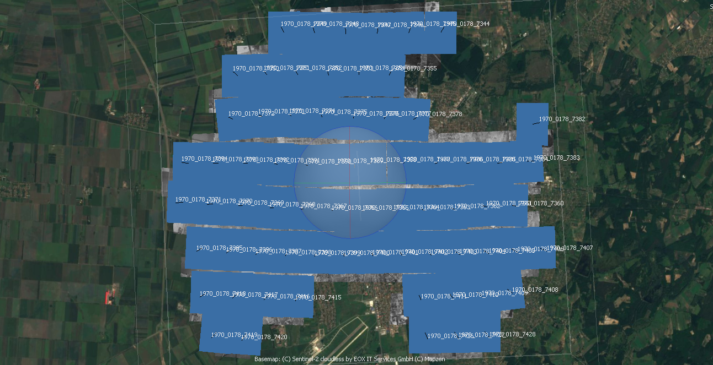
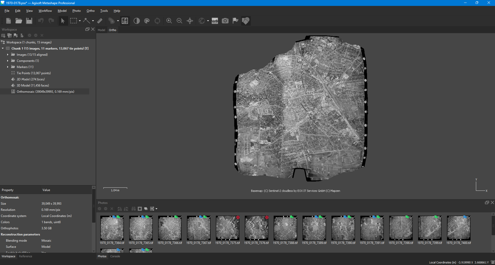
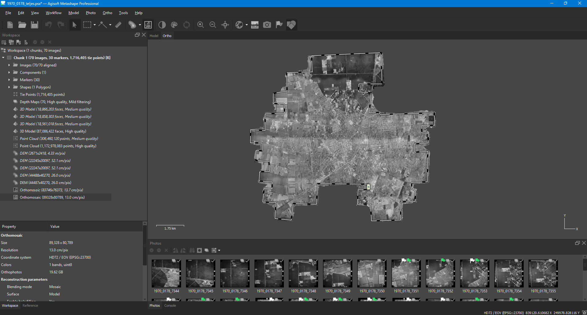
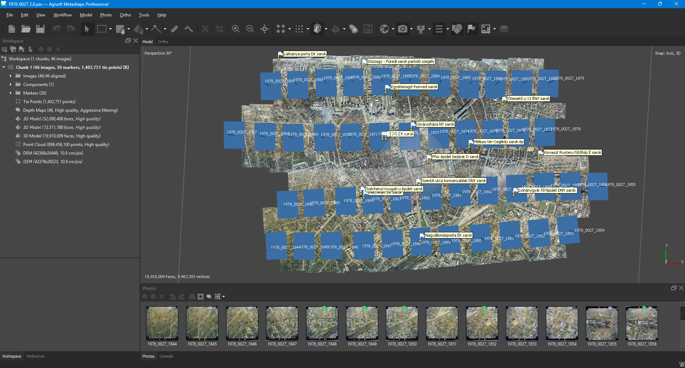

Georeferált ortomozaikok készítése archív légifelvételekből
Projekt kulcsszavak
Debrecen
Fentről.hu: digitalizált légifelvételek
Agisoft Metashape



Ezzel a projekktel az elsődleges célom az volt, hogy egy nagyobb kiterjedésű területről készítsek egy georeferált ortomozaikot amit aztán egy napjainkban készített légifelvételekkel össze lehet vetni. A másodlagos cél egy korszerű fotogrammetriai szoftver használatának elsajátítása, valamint a fotogrammetriai alapok átismétlése volt.
Az első ortomozaikot a 1970-0178-as repülés Debrecent lefedő képeiből készítettem el, mivel ez a képsorozat fedi le majdnem az egész várost. Fontosnak tartom megemlíteni, hogy ez volt az első olyan projektem, amit az egyetem után, szabadidőmben készítettem, és ez volt az a munka, ami indikálta, hogy projekteken keresztül szakmai önfejlesztésbe kezdjek. Számos másik - az oldalon megtalálható - projektem kiindulása volt.
A későbbiekben számos másik képsorozatból is elkészítettem a mozaikolást, ezzel próbálgatva és gyakorolva a különböző beállítási paramétereket. A teljeség igénye nélkül, ezidáig a következő repülésekből készítettem a város kisebb nagyobb részét lefedő mozaikokat:
A projekt még a mai napig folyamatban van, más repülések képeiből, valamint más városokról is tervezek ortomozaikokat készíteni, illetve a korábban elkészített képeket is igyekszem folyatosan "javítgatni".
Mivel az archív analóg és digitális légifelvételek az állami alapadatok adatbázisainak részét képezik, így azok publikálása engedélyhez kötött. Emiatt sajnálatos módon, jelenleg az eredményeket nem áll módomban itt közzétenni.
Amennyiben szeretne több információt megtudni erről a projektemről, bátran keressen az elérhetőségeim egyikén:
Képek és jegyzőkönyvek berszerzése a geoshop.hu oldalról, kamera paraméterek beállítása
Relatív tájékozás, kamera pozíciók meghatározása
Koordinátarendszer beállítása, illesztőpontok felvétele, modell abszolút tájékozása
Az illesztőpontok régi épületek sarkainál, egyéb jól beazonasítható tárgyaknál vettem fel. Mérőműszer hiányában ortofotókról vettem le a koordinátákat.
Ortomozaik készítése
Report alapján
Kamera tájékozás optimalizálása, illesztőpontok korrigálása